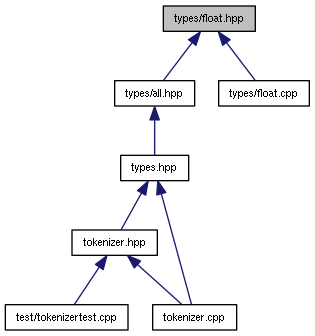

Existen diferentes interpretes para Scheme que se pueden encontrar en línea como Shaka Scheme o más conocido, Bigloo donde
se producen ejecutables que se pueden comunicar con C y Java. Bigloo se puede encontrar para descargar en su sitio oficial: https://www-sop.inria.fr/mimosa/fp/Bigloo/
Un ejemplo de lo que se puede lograr con Scheme es el siguiente:
(define WINDOW-WIDTH 150) (define WINDOW-HEIGHT 180) ; A world is a string. ; Its display is a green 18-point image of its text. ; show-world : world -> image (define (show-world world) (text world 18 "green")) "Examples of show-world:" (show-world "hello") "should be" (text "hello" 18 "green") ; The next world is formed by adding a d to the end of the previous one. ; next-world : world -> world (define (next-world world) (string-append world "d")) "Examples of next-world:" (next-world "ace") "should be" "aced" (big-bang WINDOW-WIDTH WINDOW-HEIGHT 1 "abc") (on-update-event show-world) (on-tick-event next-world)

